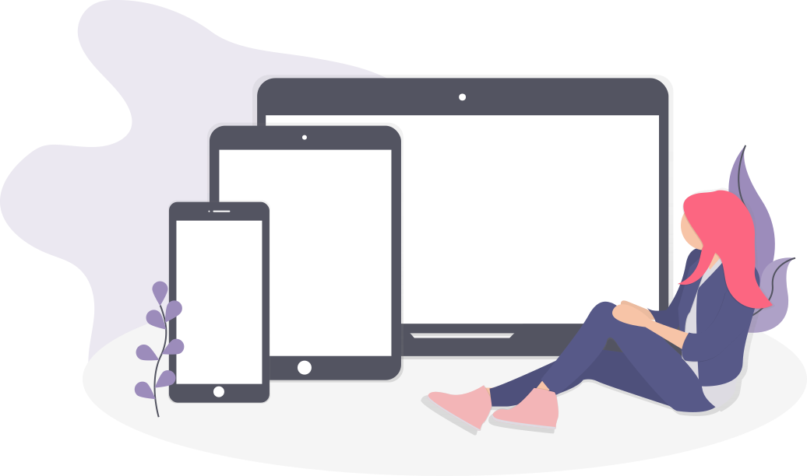

Internet...
Nos projets en rapport avec Internet sont la création futur d'une chaine Youtube et Twitch pour IsuB qui concernera la création basique de site, vidéo et mod (principalement des mods Minecraft).
On fera des lives où on codera des petis programmes python, des sites. Quand aux vidéos, ça sera les rediffusions des lives, des petits cours de codage (différents langages) et des présentation de projets. Et des petites vidéos gaming, vlog ou autre. On ne se limitera pas au codage même si ça sera le centre de la chaine.
Mobile...
Le développement mobile nous attire énormément mais nous n'avons pas encore commencer à ce renseigner sur le sujet mais dans le futur, on aimerait créé une application mobile et pourquoi pas un petit jeu. Mais pour le moment on se concentre sur le développement sur PC.
Nous nous concentrons aussi sur le développement web pour les mobiles, c'est à dire, adapter nos sites pour les téléphones ce qui permettra l'accés à plus de personnne et une meilleure visibilité sur Internet. En effet de plus en plus de personne utilise leur téléphone pour aller sur Internet et recherher des services. Les téléphones passent même au dessus des ordinateurs pour beaucoup. Ce qui nous oblige à nous adapter ce qui n'est pas une mauvaise chose, ça ouvre encore plus de possibilitées.
Le reste...
Parlons maintenant de tous les autres projets. Commençons pas la création de jeu, Isudus bosse depuis plusieurs mois sur un fangame Pokémon. Ainsi qu'un launcher/client Minecraft, Ukion client qui n'est pas réellement un jeu mais qui est un assez gros projets. On a aussi le_foucheur qui crée des modpack Minecraft, et Isudus qui crée des minis mods pour s'amuser. Tous ces projets nous aménes au vrai projet qui sera la création d'un vrai jeu. Ce projet demandera du temps, le jeu ne sortira pas dans 2 semaines mais peut être 5 ans qui sait, mais ce projet est dans les paniers et est donc en préparation. D'autres projets sont en préparations tels que la création de programme python pour aider les gens en math ou en physique par exemple. On a aussi la création d'application PC qui risquent de sortir dans les prochains mois et plein d'autres projets secrets.
